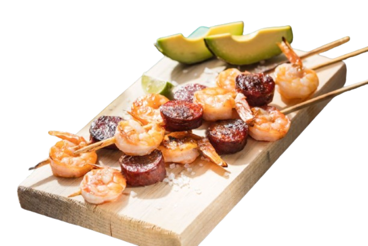
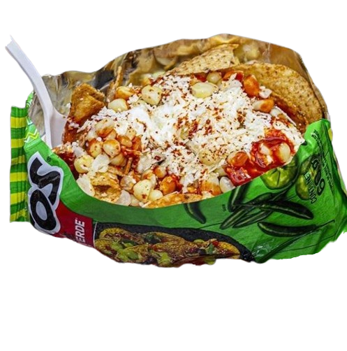
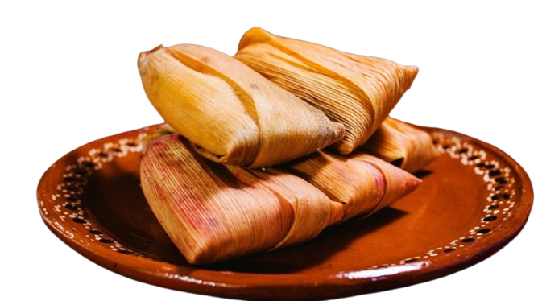

Productos Estrella
DELICIA DE ELOTE.
Es un postre tradicional, elaborado 100% de maiz de textura suave, posicionandolo como el favorito de muchos. Su cocción en hojas de maíz, le aportan un aroma y sabor muy característicos, lo hacen único. Seguramente será el favorito en cualquier evento.
BROCHETAS DE CAMARON.
Gracias a la cocción en carbón ayuda a realzar los sabores y mantener su textura tierna y jugosa. acompañado con nuestro aderezo de chipotle casero que añade un toque picante y ahumado. Son una opción excepcional para llevar a eventos, combinando lo mejor de la parrilla.
ELOTES.
Los elotes enteros o en vaso, en cualquier presentación, son una deliciosa opción para disfrutar como botana. con una buena selección de sabores y texturas crea una experiencia única y deliciosa que seguramente será un éxito en cualquier reunión o evento.
Lo Nuevo
-

Brochetas de Camarón con Salchicha
Deliciosas brochetas de camarones y salchichas ahumadas, marinadas con especias selectas.
-

Tostitos Preparados
Tostitos con una variedad de toppings.
-

Tamales de Carne
Masa sueve y rellenas de jugosa carne sazonada a la perfeccion.
-

Agua Purificada
Botellas de agua purificada para mantenerte hidratado durante el evento.
Nosotros
En P0rple Sp0r0s, nos dedicamos a ofrecerte lo mejor. Con más de 20 años de experiencia en la elaboración de productos excepcionales, se vuelven algo divertido al momento de degustar cada uno de nuestros productos, volviéndolos irresistibles ante paladares exquisitos. Nuestro compromiso va más allá de la calidad de nuestros productos. Nos esforzamos por brindarte una experiencia culinaria única, donde el servicio, la frescura y el sabor se fusionan para crear momentos inolvidables. Nuestros productos está cuidadosamente elaborado con ingredientes frescos y de la mejor calidad, garantizando así un sabor excepcional en cada bocado. En P0rple Sp0r0s nos enorgullece compartir nuestra pasión por la comida con cada uno de nuestros clientes.
Cotiza con nosotros. para conocer más sobre precios y productos.Horarios
- Lunes a sabado: 4:00 pm a 8:30:00 pm